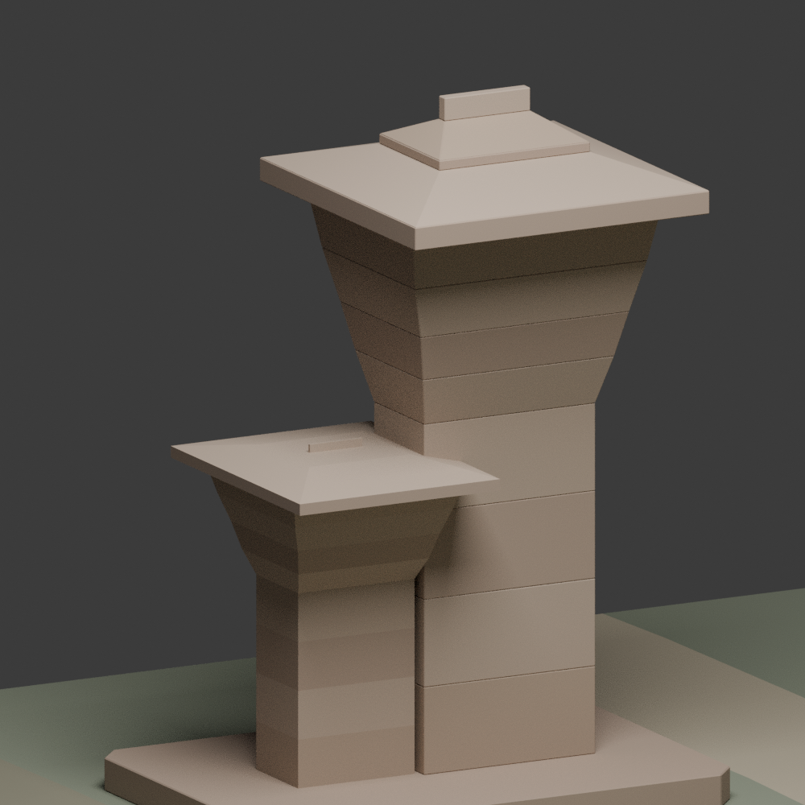
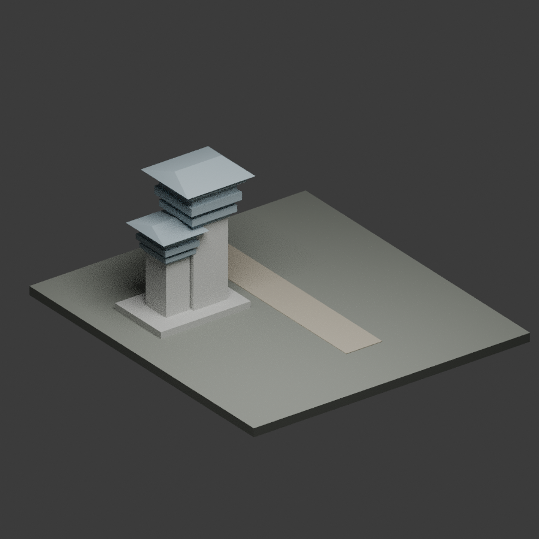
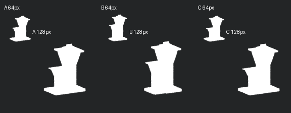

单侧地标 / 形体研究
阙影·标界
不是一道可穿过的门，
而是道路一侧的高低标记。

三种原创设计样本，不是三种古代等级。A/C地标主轮廓相近，C主要改变抵达路线；B抬高子体并采用阶折基台。
01 / 先读关系
把地标读成关系，
不只读成一根柱子。


02 / 逐层辨依据
哪些来自遗存，
哪些是这次的选择？
类型、年代与主子关系
高颐阙属于墓地石构地标。论文图四展示主子阙高低与窄身宽檐；图五展示层叠过渡和石刻仿木细部。它们支持形体比较，不赋予本模型逐块复原的身份。
巫鸿《再思汉代艺术中的“浮雕”》· 故宫官方PDF ↗图四、图五：印刷87–88页；本页不转载图版。道路、空处与基台
路径走向、地块削角与微坡、路距、基台外形和模型比例都是设计选择。主子阙放在路同侧，仅研究标界关系；不补对面的东阙、跨梁、碑兽或完整墓道。
保轮廓，暂留素面
四层外扩过渡用光滑实块概括，宽下檐上叠紧凑上檐。浮雕题材、铭文、脊鹰和真实支承节奏未建；素脊并非原物没有雕饰的证明。材料颜色也不是原石测色。
现代照片中的每块石，都能视为汉代原件吗？
不能。现有修缮资料涉及缺损阙檐支托、补配与作旧，但本轮没有逐块新旧构件对照。完整阙盖只是形态概括；不标“这块必为原石”，也不模拟修补钢筋。早期照片同样不能证明此前从未维修。
《岩土文物建筑的保护》· 印刷62页修缮案例 ↗“东檐”不等于“整个东阙重建”。现代保护棚、栏杆与园林不纳入模型。
03 / 纠错而非堆细节
从等距薄帽，
改读厚重的外扩过渡。

保留纠错前白盒，不冒称一次完成

历史v02图，仅用于过程对照，不是当前模型。失败极值二进制不公开。
原问题白盒把过渡压成等距薄盘，主子高低也没有充分拉开，容易像多层飞檐。
本次改动重看测绘与细部后，身座与上部接近半分，过渡四层向上外扩，宽深下檐嵌紧凑上檐。
还不够光滑倒锥实块不能替代复杂石刻、仿木支承与承压分析；本轮止于形体研究，不以拓扑检查替代视觉判断。
04 / 尺度与验证边界
剪影相近，
路线才是另一半信息。

64/128像素为孤立地标CPU剪影样本，不是实际游戏画面、LOD预算或手机测试。
正常三件
A/B/C全场景三角数为1104 / 1168 / 1104；实际GLB导出再导入的有向三角集合一致。拓扑与体积检查对应这三件当前几何。
接触面容差重叠分别为2 / 1 / 2对，不称精确零。法向厚度阈值1e−5、交集体积阈值1e−7；采样底面承接不等于全承压面积或结构安全。
四组真实极值
极值曾暴露非流形与实质交叠：多个相邻共面刀模的顺序布尔不稳定。改为一个封闭主阙外轮廓刀模，一次裁切子构件，再重跑四组构建与检查。
七个样本通过各自有限门槛，不证明连续参数全域。失败过程保留文字与最终报告，不公开失败二进制。
游戏美术阅读对照：Anya Jo Elvidge《Total War: Three Kingdoms》作品页。只借鉴地标/路径/留白关系，不是考古证据；战役环境署名Greg Smith，不把整张图归一作者。